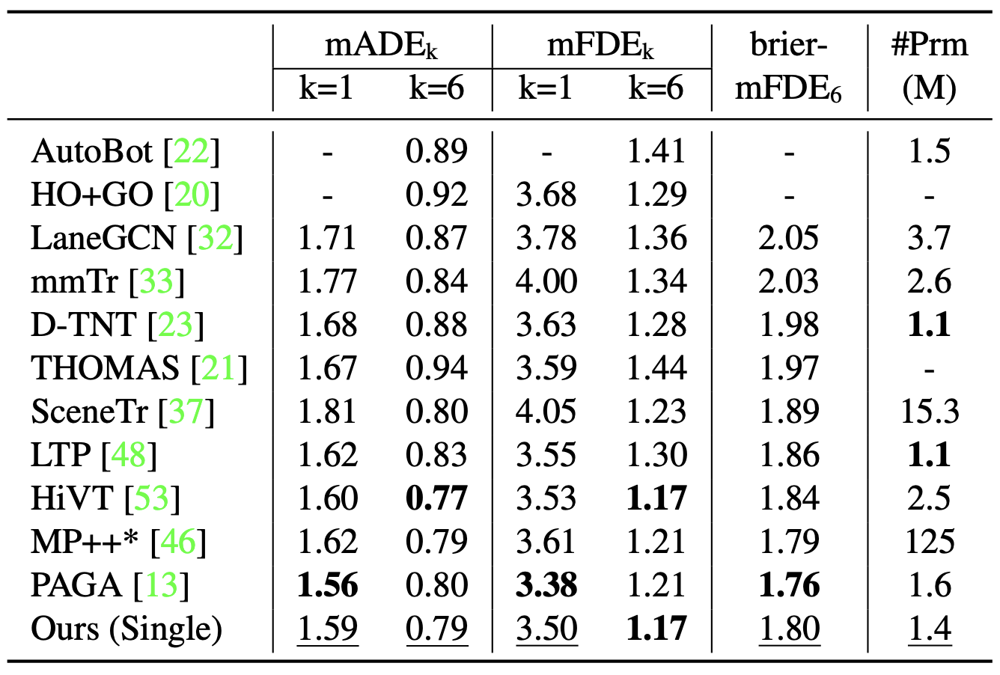

Abstract
Forecasting future trajectories of agents in complex traffic scenes requires reliable and efficient predictions for all agents in the scene. However, existing methods for trajectory prediction are either inefficient or sacrifice accuracy. To address this challenge, we propose ADAPT, a novel approach for jointly predicting the trajectories of all agents in the scene with dynamic weight learning. Our approach outperforms state-of-the-art methods in both single-agent and multi-agent settings on the Argoverse and Interaction datasets, with a fraction of their computational overhead. We attribute the improvement in our performance: first, to the adaptive head augmenting the model capacity without increasing the model size; second, to our design choices in the endpoint-conditioned prediction, reinforced by gradient stopping. Our analyses show that ADAPT can focus on each agent with adaptive prediction, allowing for accurate predictions efficiently.
Method Overview
Our scene encoding approach involves separate polyline encoders that interact in feature encoding (left). To predict endpoint proposals, we utilize the endpoint head, which employs the adaptive head with dynamic weights for multiagent prediction, without the need to transform the scene for each agent. Conversely, we use static head (simple MLP) for single-agent prediction. Then we perform endpoint refinement to improve accuracy (middle). Finally, we interpolate the full trajectory for each agent using the refined endpoints (right). By utilizing gradient detaching for endpoint and trajectory prediction modules, we achieve better performance with a small and fast architecture. Please refer to our paper for more details.
Results
Results on Argoverse Test Set. This table shows single-agent results on Argoverse. Our method achieves the best results in terms of the official metric brier-mFDE.
Results on Interaction Validation Set. This table shows multi-agent results on Interaction. Our method significantly outperforms other methods with a large gap in all metrics. Impressively, it reaches 1% miss rate, showing that our method can predict future trajectories accurately for all agents in the scene.
Qualitative Results

Example predictions from Interaction and Argoverse datasets. We visualize multi-agent predictions on Interaction (left) and single-agent on Argoverse (right). The predicted trajectories are shown in green, ground truth in red, past in cyan, and the trajectories of other agents in black.
Paper
ADAPT: Efficient Multi-Agent Trajectory Prediction with Adaptation
Gorkay Aydemir, Adil Kaan Akan and Fatma Guney
ICCV 2023
@InProceedings{Aydemir2023ICCV,
author = {Aydemir, G\"orkay and Akan, Adil Kaan and G\"uney, Fatma},
title = {{ADAPT}: Efficient Multi-Agent Trajectory Prediction with Adaptation},
booktitle = {Proceedings of the IEEE/CVF International Conference on Computer Vision},
year = {2023}}